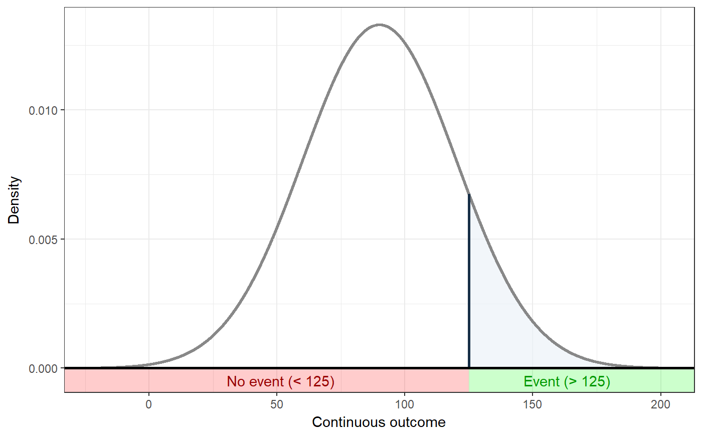
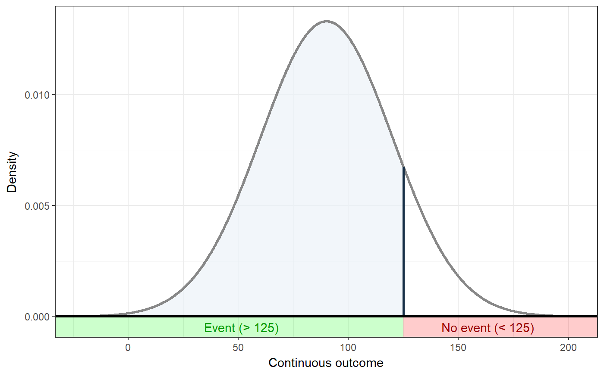
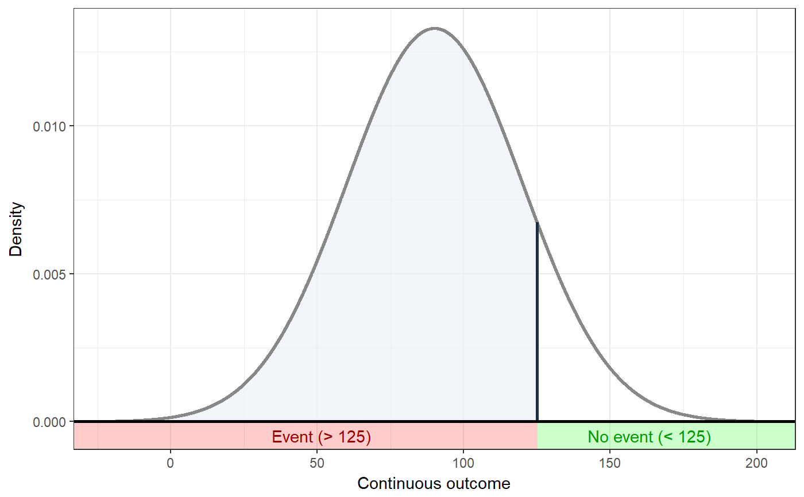
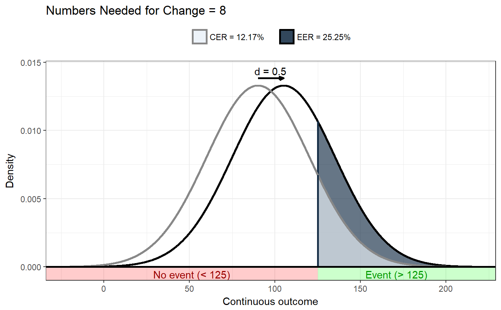
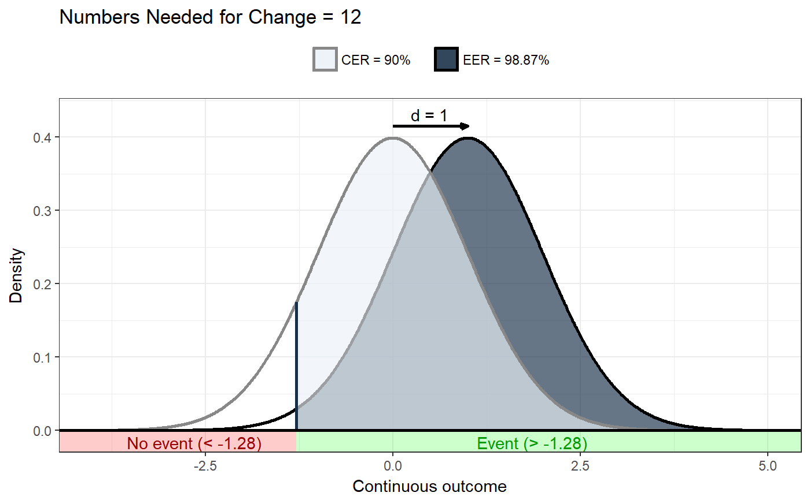

These functions can be used to visualise Numbers Needed for Change. erDataSeq is a helper function to generate an Event Rate Data Sequence, and it uses convert.threshold.to.er and convert.er.to.threshold to convert thresholds to event rates and vice versa.
erDataSeq(er = NULL, threshold = NULL, mean = NULL, sd = NULL, eventIfHigher = TRUE, pRange = c(1e-06, 0.99999), xStep = 0.01) ggNNC(cerDataSeq, d = NULL, eventDesirable = TRUE, r = 1, xlab = "Continuous outcome", plotTitle = c("Numbers Needed for Change = ", ""), theme = theme_bw(), lineSize = 1, cerColor = "#EBF2F8", eerColor = "#172F47", cerLineColor = "#888888", eerLineColor = "#000000", dArrowColor = "#000000", cerAlpha = 0.66, eerAlpha = 0.66, xLim = NULL, xLimAutoDensityTolerance = 0.001, showLegend = TRUE, verticalLineColor = "#172F47", desirableColor = "#00FF00", desirableAlpha = 0.2, undesirableColor = "#FF0000", undesirableAlpha = 0.2, desirableTextColor = "#009900", undesirableTextColor = "#990000", dArrowDistance = 0.04 * max(cerDataSeq$density), dLabelDistance = 0.08 * max(cerDataSeq$density)) convert.threshold.to.er(threshold, mean, sd, eventIfHigher = TRUE, pdist = pnorm) convert.er.to.threshold(er, mean, sd, eventIfHigher = TRUE, qdist = qnorm)
| er | Event rate to visualise (or convert). |
|---|---|
| threshold | If the event rate is not available, a threshold value can be specified
instead, which is then used in conjunction with the mean
( |
| mean | The mean of the control group distribution. |
| sd | The standard deviation (of the control distribution, but assumed to be the same for both distributions). |
| eventIfHigher | Whether scores above or below the threshold are considered 'an event'. |
| pRange | The range of probabilities for which to so the distribution. |
| xStep | Precision of the drawn distribution; higher values mean lower precision/granularity/resolution. |
| cerDataSeq | The |
| d | The value of Cohen's d. |
| eventDesirable | Whether an event is desirable or undesirable. |
| r | The correlation between the determinant and behavior (for mediated NNC's). |
| xlab | The label to display for the X axis. |
| plotTitle | The title of the plot; either one character value, this value if used; if two, they are considered a prefix and suffix to be pre/appended to the NNC value. |
| theme | The theme to use for the plot. |
| lineSize | The thickness of the lines in the plot. |
| cerColor | The color to use for the event rate portion of the control group distribution. |
| eerColor | The color to use for the event rate portion of the experimental group distribution. |
| cerLineColor | The line color to use for the control group distribution. |
| eerLineColor | The line color to use for the experimental group distribution. |
| dArrowColor | The color of the arrow to show the effect size. |
| cerAlpha | The alpha value (transparency) to use for the control group distribution. |
| eerAlpha | The alpha value (transparency) to use for the control group distribution. |
| xLim | This can be used to manually specify the limits for the X axis; if
|
| xLimAutoDensityTolerance | If |
| showLegend | Whether to show the legend (only if showing two distributions). |
| verticalLineColor | The color of the vertical line used to indicate the threshold. |
| desirableColor | The color for the desirable portion of the X axis. |
| desirableAlpha | The alpha for the desirable portion of the X axis. |
| undesirableColor | The color for the undesirable portion of the X axis. |
| undesirableAlpha | The color for the undesirable portion of the X axis. |
| desirableTextColor | The color for the text to indicate the desirable portion of the X axis. |
| undesirableTextColor | The color for the text to indicate the undesirable portion of the X axis. |
| dArrowDistance | The distance of the effect size arrow from the top of the distributions. |
| dLabelDistance | The distance of the effect size label from the top of the distributions. |
| pdist, qdist | Distributions to use when converting thresholds to event rates and vice versa; defaults to the normal distribution. |
These functions are used by nnc to show the distributions,
and event rates. They probably won't be used much on their own.
erDataSeq returns a data sequence; ggNNC a
ggplot.
Gruijters, S. L. K., & Peters, G.-J. Y. (2017). Introducing the Numbers Needed for Change (NNC): A practical measure of effect size for intervention research.
### Show distribution for an event rate value of 125 ggNNC(erDataSeq(threshold=125, mean=90, sd=30));### If the event occurs under the threshold instead of ### above it ggNNC(erDataSeq(threshold=125, mean=90, sd=30, eventIfHigher = FALSE));### ... And for undesirable events (note how ### desirability is an argument for ggNNC, whereas ### whether an event occurs 'above' or 'below' the ### threshold is an argument for erDataSeq): ggNNC(erDataSeq(threshold=125, mean=90, sd=30, eventIfHigher = FALSE), eventDesirable = FALSE);### Show event rate for both experimental and ### control conditions, and show the numbers ### needed for change ggNNC(erDataSeq(threshold=125, mean=90, sd=30), d=.5);### Illustration of how even with very large effect ### sizes, if the control event rate is very high, ### you'll still need a high number of NNC ggNNC(erDataSeq(er=.9), d=1);